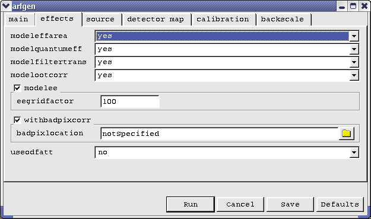

XMM-Newton Science Analysis System
sas (gui-1.52.10) [xmmsas_20170112_1337-16.0.0]
Using tasks
Once you have selected a specific SAS task, a dialog will appear. Though the dialog may be different for every task, the all have a general layout, that may look like:

The top side of the dialog contains all parameters that are needed
by this task.
Parameters may be grouped:
- Clicking on one of the tabs will show the parameters belonging to the selected tab.
- Parameters can be framed to notify the user that they logically belong to each-other.
- Some of these frames have a check box on the top left. This check box enables or disables all parameters in that box. If disabled, the parameters are grayed out, which means that their values are not important to the task.
- Other frames may show a selection box. By clicking on the selection, a pull-down menu appears where you can change the selection. Once a new selection is made, the parameters in the box have changed.
Subsections
XMM-Newton SOC/SSC -- 2017-01-12